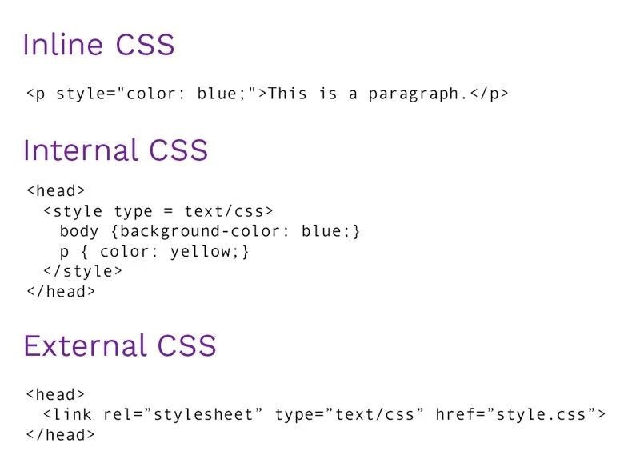

The Internet is a global network that connects millions of computers and devices, allowing people to share information and communicate from anywhere in the world. It works by sending data through cables, satellites, and wireless connections, linking devices to servers that store websites, apps, and online content.
With the Internet, you can browse websites, watch videos, send messages, play games, shop online, and much more. It plays a big role in daily life, making it easier to learn, work, and stay connected with others across the globe.
ISPs provide users access to the Internet and maintain connections to the backbone network. They offer services including broadband, wireless access, domain hosting, and more. These ISPs enable online access for communication, work, and education. They differ in speed, coverage, and price, giving users options based on their needs. Many are expanding to improve service nationwide.
Examples: PLDT, GLOBE, SKY BROADBAND, EASTERN TELECOM, CONVERGE ICT.
The Web is an information-sharing model built on top of the internet, using HTTP to transmit data. It consists of billions of digital documents (web pages) linked together via hyperlinks and accessed using browsers.
The Internet is a global network that connects millions of computers and devices, allowing them to communicate and share information. The World Wide Web, or WWW, is a service that operates on the Internet, consisting of websites and web pages accessed through web browsers. In simple terms, the Internet is the infrastructure, while the Web is one of the ways we use it to access information.
URLs guide browsers to specific online resources and consist of:
A URL (Uniform Resource Locator) is the web address used to access resources on the internet, like websites or files. It typically includes a protocol (like http), a domain name (like www.example.com), and a path to the specific resource (e.g., /about).
Domain Extensions: .com, .org, .edu, .net, .gov, .biz, .mil
Web servers store and deliver web content to users through the HTTP or HTTPS protocols. They handle requests from clients (browsers) and respond with data such as HTML files, images, or multimedia.
Planning- Set goals, define project scope, and outline requirements.
Analysis- Research user needs, market trends, and technical requirements.
Design- Create wireframes, prototypes, and plan the site's look and feel.
Implementation- Develop the website by coding the front-end and back-end.
Testing- Find and fix bugs, ensure functionality, and optimize performance.
Publishing- Launch the website online for users to access.
Maintenance- Update content, fix issues, and keep the site secure and efficient.
The standard markup language for creating web pages. HTML (HyperText Markup Language) is the standard language used to structure content on the web. It organizes text, images, links, and other elements using tags like <h1>, <p>, and <img>. HTML defines the layout and meaning of each part of a webpage.
It works together with CSS for styling and JavaScript for interactivity. Modern HTML (HTML5) also supports media, forms, and advanced web features, making it essential for building websites and web applications.
Used for styling HTML content. CSS is the language that styles and formats HTML content, controlling layout, colors, fonts, and spacing to make websites visually appealing.
Inline CSS- styles are added directly inside an HTML element.
Internal CSS- styles are placed within a <style> tag inside the HTML <head>
External CSS- styles are written in a separate .css file and linked to the HTML page.
Text/Source Code Editors: Notepad, Sublime Text, VS Code, etc...
Web Browsers: For testing and debugging (Chrome, Firefox, etc..)


Version Control: Git
Graphic Design Tools: Photoshop, Canva, etc...
Validation Tools: W3C Validator